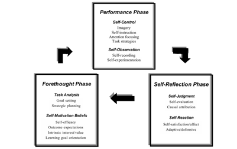

Supporting Students Self-Regulation
In recent times, with the worldwide spread of Covid-19 and the subsequent limitations posed on gatherings of people by many governments, online education has proved to be an invaluable resource for compensating the impossibility of students of any grade and age to attend traditional classes. More and more pupils have been increasingly forced by the circumstances to rely on their own abilities to manage their progress and improvements over time, through a practice referred to as Self-Regulated Learning (SRL). To aid them in this activity, providing a learning analytics tool with the ultimate goal of increasing the quality of their learning is to be considered of utmost importance. Previous research on SRL shows that supporting students in developing skills in this set of practices can improve learning outcomes by 20% and learning support and teaching by 22%. Therefore, providing SRL support to students will help them achieve greater online academic success. The most popular method of doing so is through multiple visualizations (combined in a single dashboard, for example), which ultimately raise students’ self-awareness.
We propose a high-fidelity prototype for a web-based, interactive visualization tool meant to support SRL in its strategies with a focus on time management and goal setting in particular. The target users of such an online platform are students partaking the Information Visualization course, held between the months of January and March at KTH Royal Institute of Technology. The primary motivation behind the project, is to replace the timetracking system currently in use – consisting of a spreadsheet recording all individual students’ activity over time, with a more interactive and informative interface designed with the principles of SRL in mind. To achieve this, we have addressed the following research questions:
We started our work by collecting theory models by reviewing the literature and analysing the current available tools in the market. Next phase is performing a requirement elicitation by distributing an online survey and conducting two semi-structured interviews applying participatory design. Previous students of IVIS were involved. The quantitative survey was completed by ten students while two students took part in the qualitative survey. In order to gather the elicited requirements and speculate on how to address them, a brainstorming session took place to define the guidelines of the project while keeping the principles of SRL in mind.
Afterwhich, a lo-fi prototype was sketched in Miro along with the basics of an interaction flowchart. Based on the feedback from our supervisors, a hi-fi prototype was developed in Figma, along with interactions and improved widgets.
The final high fidelity prototype was developed in figma. It was based on our initial design using SRL theory, and was set to achieve the set of goals and features that we had set in previous design meetings. Since the prototype followed the basis of SRL principles, we emphasized each phase of SRL as a separate section, with its own set of functionalities according to its main purpose, this while keeping the cyclical synergy of the SRL Zimmermann model. The main goal of the prototype was to suggest a supportive tool for the student which, while being easy to use, would help the user to improve their self regulated learning. At the same time, such tool had to be versatile and adapt to different types of students. The prototype was divided into 4 section of one page each: Homepage, Planning, Performance and Reflection.
The project provided a learning dashboard to support student’s SRL, specifically for students of the Information Visualization course offered at KTH. It is a simple and userfriendly tool designed for individual students in group works. The platform includes features that support planning, performance, and reflection in SRL, as well as a home page. The concept of our learning dashboard with rich visualiza- tion is well received by the students based on our survey, interview, early prototype as well as final prototype feedback. A Think Aloud Protocol was conducted to evaluate the platform and the four topics were extracted of which the problems and improvements were discussed in the results. It is also of utmost importance to mention that further research is required to address the fact that the tool has the potential to be expanded for other courses other than Information Visualization.